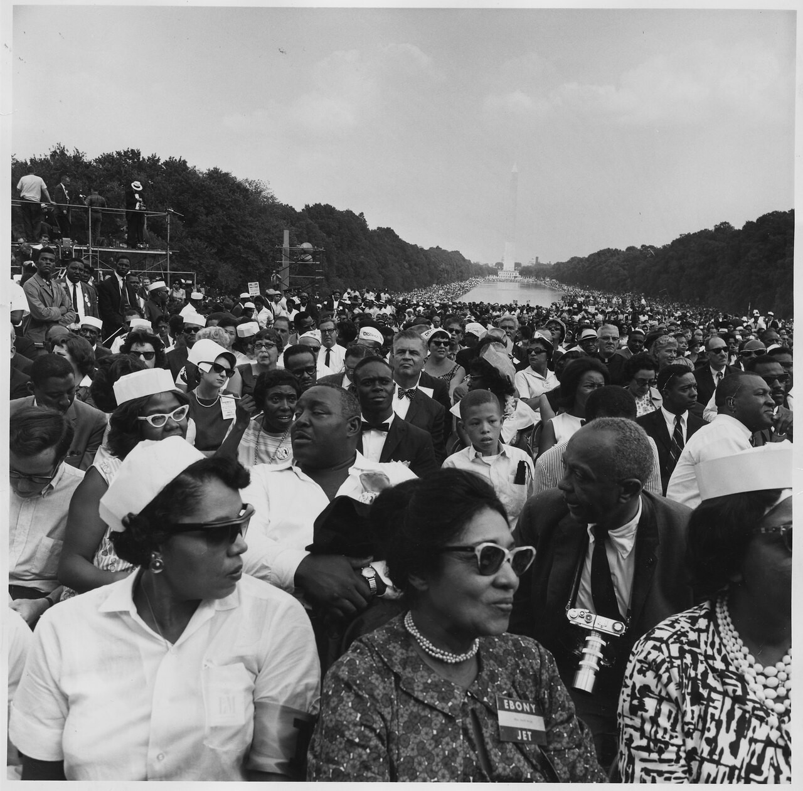

Directions: Study the photograph and the background, then answer the questions.

Background. In the spring of 1963, the Birmingham campaign stalled, and then thousands of schoolchildren marched and were met with arrests, fire hoses, and police dogs on television. Birmingham's business leaders settled within the week. On June 11, President Kennedy addressed the nation and announced a comprehensive civil rights bill. On August 28, about 250,000 people came to Washington for jobs and freedom. On September 15, a bomb killed four girls at a Birmingham church, and the bill remained stalled in Congress.
1. The photograph shows the crowd at the Lincoln Memorial. State the march's full purpose in its own two key words, and name two of the ten demands the march carried.
2. Four months before this photograph, King wrote a letter from a Birmingham cell. Name the audience he was answering, and state, in paraphrase, the obstacle he called the deepest.
3. Explain the sequence that moved President Kennedy between May 3 and June 11, naming the two Birmingham events and the settlement between them.
4. Eighteen days after this photograph was taken, four girls were killed in Birmingham. Name all four, with their ages, and state where the civil rights bill stood at the year's end.
1. The march's purpose and two demands. Jobs and freedom. Any two of the ten demands earn credit, including a comprehensive civil rights act, desegregation of the public schools in the fall of 1963, a federal fair employment law, a two dollar minimum wage, withholding of federal funds from discriminatory programs, and protection of demonstrators from police brutality. (Blueprint 10)
2. The Letter's audience and its deepest obstacle. King was answering eight white Alabama clergymen who had called the demonstrations unwise and untimely. In paraphrase, the deepest obstacle was the white moderate, who preferred order to justice and kept setting the timetable for another people's freedom. Students must paraphrase. This check quotes none of the letter, and neither does this key. (Blueprint 9)
3. The sequence from May 3 to June 11. On May 2 and 3 the Children's Crusade met mass arrests and then fire hoses and police dogs before television cameras. Within a week Birmingham's business leaders settled with the movement on downtown desegregation and Black clerks. On June 11 Kennedy addressed the nation, called civil rights a moral issue, and announced the comprehensive bill. Credit requires the order: crisis seen nationally, local settlement, presidential move. (Blueprint 9)
4. September 15 and the bill. Addie Mae Collins, fourteen; Cynthia Wesley, fourteen; Carole Robertson, fourteen; and Carol Denise McNair, eleven, killed in the bombing of the 16th Street Baptist Church on September 15, 1963. At the year's end the civil rights bill remained stalled in Congress, opposed by the southern bloc and unpassed. Grade the four names exactly. (Blueprint 10)
Teacher note. This check is formative. Question 3 is the diagnostic for the lesson's central claim, that Birmingham's crisis moved the presidency. Students who begin the sequence on June 11, with Kennedy acting on his own, have missed the chain the activity builds and should be sent back to Stations 2 and 3. Question 4 predicts success on the writing task's second half, because it requires the year's cost and the bill's position stated together.